2110D10 differential inner case - r + r with manual gearbox removed - includes gearbox dismantle and rebuild
- Path
- Procedures > 21 GEARBOX > 2110 MANUAL GEARBOX AND DIFFERENTIAL > 2110D manual gearbox differential > 2110D10 differential inner case - r + r with manual gearbox removed - includes gearbox dismantle and rebuild
- Kind
- repair procedure (removal / refitting; the operation number is the code)
- Applies to
- engines: 1.6 TS, 2.0 TS; all production periods
- Interactive page
- https://sloeber94.github.io/elrnDB-a147/en/#/3026028
Applies to: engines: 1.6 TS, 2.0 TS; all production periods
 Removing
Removing
 Refitting
Refitting1. Fit the gearbox and differential (1a) on the overhaul stand using the tool (1b).
 | Name | Country |
|---|---|---|
1b | Mount | 1.820.146.000 |
2. Undo the bolts (2a) and remove the rear cover (2b).
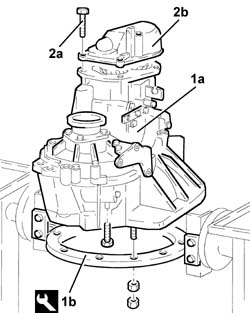
Applies to: engines: 1.6 TS, 2.0 TS; all production periods
1. Remove the left internal differential driveshaft (1a) using tools (1b) and (1c).
| Name | Country |
|---|---|---|
1b | Flange | 1.820.229.000 |
| Name | Country |
|---|---|---|
1c | Counter weight | 1.821.161.000 |
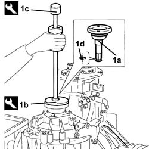
Applies to: engines: 1.6 TS, 2.0 TS; all production periods
Engage any gear using the gear selector/engagement lever.
1. Undo the 5th speed selector fork bolt.
Engage 5th speed pressing the selector fork on the main shaft.
2. Remove the staking and loosen the ring nuts for the main and layshafts.
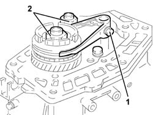
Applies to: engines: 1.6 TS, 2.0 TS; all production periods
1. Completely undo the ring nuts for the main and layshafts.
2. Remove the 5th speed selector fork complete with 5th speed sliding sleeve.
3. Remove the flange (3a) and the hub for the 5th speed sliding sleeve (3b).
4. Remove the pre-synchronizer mountings.
5. Remove the 5th speed synchronizer ring.
6. Remove the seal.
7. Remove the 5th speed drive gear.
8. Remove the needle bearing for the 5th speed drive gear.
9. Remove the 5th speed drive gear bush.
10. Remove the spacer.
11. Remove the 5th speed driven gear.
12. Undo the bolt (12a) and remove the plate (12b) retaining the main and layshaft rear bearings.
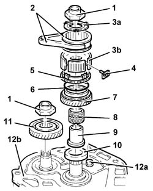
Applies to: engines: 1.6 TS, 2.0 TS; all production periods
1. Remove the main and layshaft rear bearing circlips.
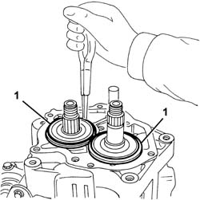
Applies to: engines: 1.6 TS, 2.0 TS; all production periods
1. Undo the plugs for positioning the gear control rods.
2. Undo the bolt fixing the Reverse gear shaft.
3. Undo the reversing lights switch.
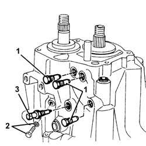
Applies to: engines: 1.6 TS, 2.0 TS; all production periods
1. Undo the bolts (1a) and remove the differential flange (1b), complete with oil seal (1c), O-Ring (1d) and scraper ring (1e).
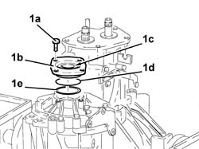
Applies to: engines: 1.6 TS, 2.0 TS; all production periods; only with equipment: Cambio meccanico
1. Undo the bolts (1a) and remove the gear selector/engagement mounting bracket (1b).
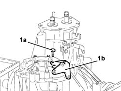
Applies to: engines: 1.6 TS, 2.0 TS; all production periods
1. Undo the bolts fixing the gearbox casing to the bell housing.
2. Position the gear selector/engagement lever downwards.
3. Remove the gearbox casing using two screwdrivers in the special projections.
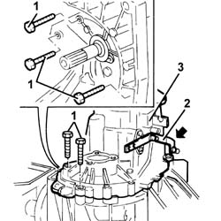
Applies to: engines: 1.6 TS, 2.0 TS; all production periods
1. Remove the differential assembly.
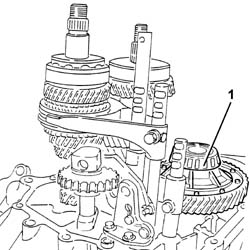
Applies to: engines: 1.6 TS, 2.0 TS; all production periods
Refitting
RemovingPlace the differential assembly back in its housing.
Position all the gear selector forks in neutral.
Apply the recommended sealant to the contact surfaces between the bell housing and the gearbox casing.
 | Type | Component | Name | Qty. |
|---|---|---|---|---|
- | Sealant | GEARBOX SEALS/GASKETS | Loctite 573 | - |
Place the gearbox casing on the bell housing back in its housing.
Tighten the bolts fixing the gearbox casing to torque.
 | Fastening | Component | Ø | Value (daNm) |
|---|---|---|---|---|
- | Bolt | GEARBOX GEAR CASING | M8 | 2.3 ÷ 2.8 |
Applies to: engines: 1.6 TS, 2.0 TS; all production periods; only with equipment: Cambio meccanico
Place the gear selector/engagement mounting bracket back in its housing.
Applies to: engines: 1.6 TS, 2.0 TS; all production periods
Place the reversing switch back in its housing and tighten it.
Tighten the bolt fixing the Reverse shaft to the recommended torque.
| Fastening | Component | Ø | Value (daNm) |
|---|---|---|---|---|
- | Bolt | Reverse shaft | M8 | 3.1 ÷ 3.7 |
Tighten the plugs for positioning the gear control rods.
Place the main and layshaft rear bearing circlips back in their housings.
Apply the recommended sealant to the contact surfaces between the gearbox casing and the main and layshaft rear bearing retaining plate.
| Type | Component | Name | Qty. |
|---|---|---|---|---|
- | Sealant | GEARBOX SEALS/GASKETS | Loctite 573 | - |
Fit the main and layshaft rear bearing retaining plate and fix it tightening the bolt to torque.
| Fastening | Component | Ø | Value (daNm) |
|---|---|---|---|---|
- | Bolt | GEARBOX REAR COVER SPACER | M8 | 2.3 ÷ 2.8 |
1. Place the 5th speed driven gear back in its seating.
2. Place the spacer back in its housing.
3. Place the 5th speed drive gear bush back in its seating.
4. Place the 5th speed drive gear needle bearing back in its seating.
5. Place the 5th speed drive gear back in its seating.
6. Place the seal back in its housing.
7. Place the 5the speed synchronizer ring back in its seating.
8. Place the flange (8a) and the hub for the 5th speed sliding sleeve (8b) back in their housings.
9. Place the pre-synchronizer mountings back in their housings.
10. Place the 5th speed selector fork complete with 5th speed sliding sleeve back in its housing.
11. Tighten the new main shaft and layshaft ring nuts to the specified torque.
| Fastening | Component | Ø | Value (daNm) |
|---|---|---|---|---|
11 | Ring nut | GEAR SHAFTS | M20 | 10.6 ÷ 13.0 |
12. Tighten the 5th speed selector fork bolt to the specified torque.
| Fastening | Component | Ø | Value (daNm) |
|---|---|---|---|---|
12 | Bolt | 5thª speed selector fork | M6 | 1.6 ÷ 2.0 |
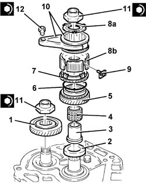
Applies to: engines: 1.6 TS, 2.0 TS; all production periods
Apply the recommended sealant to the contact surfaces between the main and layshaft rear bearing retaining plate and the rear cover.
| Type | Component | Name | Qty. |
|---|---|---|---|---|
- | Sealant | GEARBOX SEALS/GASKETS | Loctite 573 | - |
1. Place the rear cover (1a) back in its housing and fix it tightening the bolts (1b) to the recommended torque.
| Fastening | Component | Ø | Value (daNm) |
|---|---|---|---|---|
1b | Bolt | GEARBOX REAR COVER | M8 | 2.3 ÷ 2.8 |
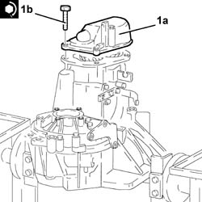
Applies to: engines: 1.6 TS, 2.0 TS; all production periods
Using a suitable drift, tighten the differential rear bearing outer race.
1. Position the tool, complete with dial gauge, on the surface of the differential and zero the dial gauge on the bearing outer race with a pre-loading of 1 mm.
| Name | Country |
|---|---|---|
1 | Dial gauge mounting | 1.820.085.000 |
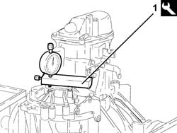
Applies to: engines: 1.6 TS, 2.0 TS; all production periods
1. Position the tool (1a), complete with dial gauge, on the differential flange, engine side (1b) and measure the difference.
| Name | Country |
|---|---|---|
1a | Dial gauge mounting | 1.820.085.000 |
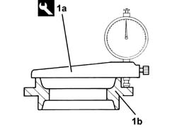
Applies to: engines: 1.6 TS, 2.0 TS; all production periods
Calculate the size of the scraper ring for pre-loading the differential bearings adding 0.12 mm to the difference measured.
Place in the housing the scraper ring or rings for pre-loading the differential bearings, of the size calculated or the next size up.
1. Place a new oil seal (1a) on the differential flange using the tools (1b) and (1c).
| Name | Country |
|---|---|---|
1b | Grip | 1.821.171.000 |
| Name | Country |
|---|---|---|
1c | Fitting tool | 1.821.225.000 |
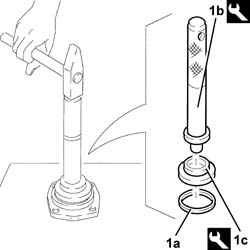
Applies to: engines: 1.6 TS, 2.0 TS; all production periods
Place the differential flange complete with new oil seal back in its housing and secure it using the bolts.
Undo the fixings and remove the gearbox and differential from the tool.
| Name | Country |
|---|---|---|
- | Mount | 1.820.146.000 |
Remove the tool supporting the overhaul stand and put it back.
Applies to: engines: 1.6 TS, 2.0 TS; all production periods
Dismantling
ReassemblingProceed with dismantling 2110B20 manual gearbox (5 speed) with differential - dismantle and rebuild - wash and check parts - replace synchronisers and internal controls if necessary.
Applies to: engines: 1.6 TS, 2.0 TS; all production periods
Reassembling
DismantlingProceed with re-assembly 2110B20 manual gearbox (5 speed) with differential - dismantle and rebuild - wash and check parts - replace synchronisers and internal controls if necessary.